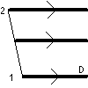
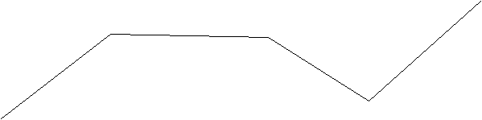
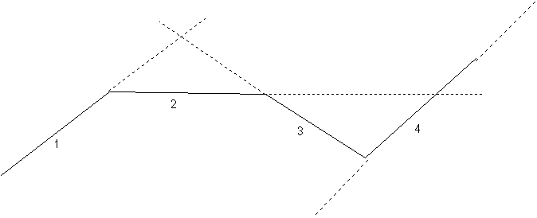

Cette page reprend l'aide d'OptGeo 3.03, écrite pour un ordinateur et une souris, adaptée à la version web : les gestes (au doigt ou à la souris), les boutons et les menus décrits sont ceux de cette version. Mode d'emploi détaillé : Utiliser OptGeo sur le web.
Onde plane

Définition
Elle est définie par les points 1, 2 et D, et par le nombre de rayons lumineux composant le faisceau.
L'onde plane peut être ajoutée :
- en touchant (ou en cliquant) le bouton « Onde plane » de la palette des objets (famille « Sources »), puis en plaçant le point 1, puis le point D, puis le point 2, et enfin en donnant, dans la boîte de saisie qui s'ouvre alors, le nombre de rayons composant le faisceau (voir Placer un objet). Le point 2 sera automatiquement ramené sur la perpendiculaire à 1D passant par 1.
OU
- menu « Ajouter (par coordonnées) », puis « Onde plane (faisceau parallèle) » (sous « Source ») : le panneau des propriétés s'ouvre, déjà rempli, et le bouton « Valider » ajoute l'élément.
Options
On peut imposer
- l'épaisseur du trait représentant les rayons à l'écran
- la couleur des rayons ; ce n'est pas simplement la couleur représentée à l'écran, mais aussi la couleur qui détermine l'indice de réfraction pour les milieux réfractants dispersifs ; un rayon de lumière blanche est composé de trois rayons rouge, vert et bleu.
- le nombre maximal de rayons enfants ; lorsque le rayon arrive sur un dioptre, il donne en général naissance à un rayon réfléchi et à un rayon transmis ; le rayon réfléchi est appelé ici « rayon enfant » (sauf dans le cas de la lame semi-réfléchissante idéale) ; par défaut, le nombre maximal d'enfants est de 10. Remarque : un enfant peut avoir lui aussi des enfants, mais son nombre maximal d'enfants est celui de son rayon parent diminué de 1. Le nombre de rayons enfants s'applique à chacun des rayons composant le faisceau.
- le fait qu'il existe ou pas un rayon réfléchi en plus du rayon réfracté est une propriété de chaque élément réfractant
- s'il n'y a pas de réfraction (angle d'incidence plus grand que l'angle limite), le rayon réfléchi est un rayon simple, pas un enfant
- on peut demander à ce que les prolongements des différents segments qui composent le trajet d'un rayon soient tracés en pointillés, vers l'avant ou vers l'arrière, et ce pour chacun des rayons qui composent le faisceau ; il suffit de préciser la liste des segments concernés (segments numérotés dans l'ordre de propagation du rayon) ; ainsi, si le cheminement du rayon est le suivant :

et qu'on demande le prolongement (1,2,4) vers l'avant et (3,4) vers l'arrière,
alors on obtient :

- Tracé des surfaces d'onde : on peut demander le tracé de surfaces d'onde ; il suffit d'indiquer la valeur du chemin optique pour lequel on veut effectuer le tracé. Cela ne relève pas vraiment de l'optique géométrique, mais on ne paye pas plus cher... Le plan 1-2, perpendiculaire aux rayons lumineux, est supposé être un plan d'onde, et constitue l'origine pour le calcul du chemin optique.
À noter que pour que le tracé soit pris en compte, la simulation ne doit comporter ni miroir sphérique paraxial, ni lentille mince paraxiale ; ces éléments sont en effet des idéalisations, schématisées par des surfaces planes alors qu'ils sont en réalité sphériques, et on ne peut pas calculer les chemins optiques correctement dans ce cas. Mais rien n'empêche d'utiliser miroir sphérique réel et lentille réelle...
Ces propriétés peuvent être rendues accessibles :
- à la construction de l'onde plane si on passe par le menu « Ajouter (par coordonnées) »
- à tout instant en touchant (ou en cliquant) l'élément pour le sélectionner, puis le bouton « Propriétés » de la barre de sélection (en bas du dessin, ou en haut si elle cachait l'élément) ; le panneau des propriétés s'ouvre, son bouton « Valider » applique les modifications et « Annuler » les abandonne. On peut aussi toucher le bouton « Propriétés » de la barre du haut, puis l'élément : ce mode reste actif jusqu'au bouton « Terminer » du bandeau de consigne (ou la touche Échap).